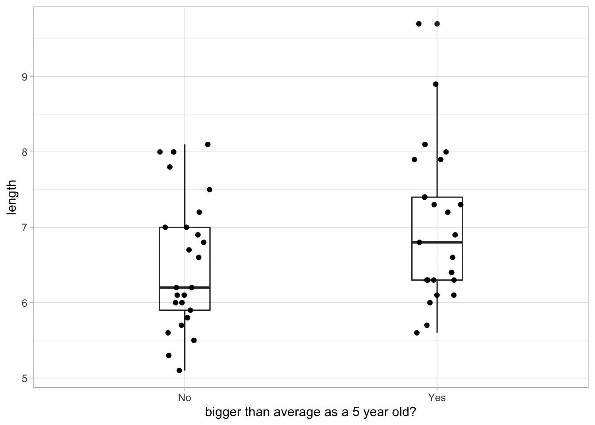

library(RCurl)
library(dplyr)
library(tidyr)
library(patchwork)
library(viridis)
library(lme4)
library(ggplot2); theme_set(theme_light())
# Discrete colors
scale_colour_discrete <- function(...) {
scale_colour_viridis(discrete = TRUE, option = "cividis")
}
# Read, crop and clean data
d <- readr::read_csv("https://raw.githubusercontent.com/maxlindmark/warm-life-history/master/data/for_fitting/growth_scaling_dat.csv") %>%
filter(area == "FM" & catch_age == 6) %>%
dplyr::select(length, catch_age, back_calc_age, ID) %>%
filter(ID %in% head(unique(ID), 50)) %>% # filter 50 individuals
rename(age = back_calc_age) %>%
mutate(age_sq = age*age)Here we’ll use a cool data set of back-calculated length-at-age in perch, Perca fluviatilis. This means we have the estimated length at previous ages for all fish, and we can use this data to illustrate the usefulness of random effects when you want to account for non-random variation among groups to someone who isn’t yet very familiar with multilevel or mixed effects models. The data come from this preprint Lindmark et al., 2023, which as of writing is in review. Data and code can be found on GitHub and deposited on zenodo. First we’ll load some packages, read, clean and filter the data.
First plot the data to see what we are trying to estimate (how length relates to age):
# Plot length vs age, we'll use a polynomial to account for the curvature
ggplot(d, aes(age, length)) +
geom_point() +
stat_smooth(method = "lm", formula = y ~ poly(x, 2))Now we can fit a model of length as a function of age (and a squared term just because it isn’t exactly linear in this age-range).
# First a simple lm
m <- lm(length ~ age + age_sq, data = d)
summary(m)
Call:
lm(formula = length ~ age + age_sq, data = d)
Residuals:
Min 1Q Median 3Q Max
-4.3148 -0.9154 -0.0156 0.8760 3.7220
Coefficients:
Estimate Std. Error t value Pr(>|t|)
(Intercept) 1.21080 0.42298 2.863 0.00456 **
age 5.80080 0.32234 17.996 < 2e-16 ***
age_sq -0.39600 0.05271 -7.513 1.06e-12 ***
---
Signif. codes: 0 '***' 0.001 '**' 0.01 '*' 0.05 '.' 0.1 ' ' 1
Residual standard error: 1.395 on 247 degrees of freedom
Multiple R-squared: 0.9256, Adjusted R-squared: 0.925
F-statistic: 1536 on 2 and 247 DF, p-value: < 2.2e-16The residuals look nice! Or?
# Extract residuals
d$res_m <- residuals(m)
# Plot!
ggplot(d, aes(res_m)) +
geom_histogram() +
labs(x = "residuals simple linear regression")`stat_bin()` using `bins = 30`. Pick better value with `binwidth`.If we group them by individual fish we see something…
ggplot(d, aes(ID, res_m, color = ID)) +
geom_boxplot() +
guides(color = "none") +
theme(axis.text.x = element_text(angle = 90)) +
geom_hline(yintercept = 0, linetype = 2, color = "tomato3") +
labs(y = "residuals from random slope and intercept model")Many boxes do not really overlap 0 when grouped by individual like this. Observations within an individual tend to all be above or below the average! As an example, we can plot the average size at age 1 for two groups: individuals that are below and above the mean size when they are age 5. We see that individuals that are bigger when 5 years where also on average bigger as 1 year olds.
d5 <- d %>%
filter(age == 5) %>%
mutate(mean_length = mean(length)) %>%
mutate(big_ind = ifelse(length > mean_length, "Yes", "No")) %>%
dplyr::select(big_ind, ID)
d %>% left_join(d5, by = "ID") %>%
filter(age == 1) %>%
ggplot(aes(big_ind, length)) +
geom_boxplot(width = 0.2, fill = NA) +
geom_jitter(height = 0, width = 0.1) +
labs(x = "bigger than average as a 5 year old?")
How to deal with this? We can let the variable ID interact with age. This gives every individual a unique slope and intercept.
# First a simple lm
m2 <- lm(length ~ age*ID + age_sq, data = d)
# Extract residuals
d$res_m2 <- residuals(m2)
# Make data long for plotting
d %>%
pivot_longer(c(res_m, res_m2)) %>%
mutate(name2 = ifelse(name == "res_m", "No ID effect", "Age*ID interaction")) %>%
ggplot(aes(ID, value, color = ID)) +
facet_wrap(~name2, ncol = 1) +
geom_boxplot() +
guides(color = "none") +
theme(axis.text.x = element_text(angle = 90)) +
geom_hline(yintercept = 0, linetype = 2, color = "tomato3")While the issues with the residuals got “fixed”, it wasn’t cheap. Just look at the summary table:
summary(m2)
Call:
lm(formula = length ~ age * ID + age_sq, data = d)
Residuals:
Min 1Q Median 3Q Max
-2.132 -0.428 0.013 0.411 1.432
Coefficients:
Estimate Std. Error t value Pr(>|t|)
(Intercept) 0.3080 0.7584 0.406 0.685236
age 6.3160 0.2728 23.149 < 2e-16 ***
ID1987346FM -0.5900 1.0399 -0.567 0.571340
ID1987347FM 3.5900 1.0399 3.452 0.000724 ***
ID1987348FM 1.5800 1.0399 1.519 0.130805
ID1987353FM 1.2500 1.0399 1.202 0.231278
ID1987354FM 0.5600 1.0399 0.538 0.591044
ID1987360FM 2.6400 1.0399 2.539 0.012157 *
ID1987365FM 1.8700 1.0399 1.798 0.074176 .
ID1987376FM 0.4000 1.0399 0.385 0.701057
ID1987383FM 0.7900 1.0399 0.760 0.448663
ID1987389FM 2.0200 1.0399 1.942 0.053974 .
ID1987390FM -0.6000 1.0399 -0.577 0.564843
ID1987393FM 1.0300 1.0399 0.990 0.323569
ID1987399FM 2.4800 1.0399 2.385 0.018350 *
ID1987403FM 0.1400 1.0399 0.135 0.893093
ID1987404FM 0.7600 1.0399 0.731 0.466046
ID1987407FM 0.9000 1.0399 0.865 0.388196
ID1987412FM 0.5600 1.0399 0.538 0.591044
ID1987420FM 0.9600 1.0399 0.923 0.357437
ID1987423FM 1.5900 1.0399 1.529 0.128405
ID1987429FM 3.6500 1.0399 3.510 0.000593 ***
ID1987440FM 2.0700 1.0399 1.990 0.048367 *
ID1987445FM 0.8600 1.0399 0.827 0.409581
ID1987449FM 1.0700 1.0399 1.029 0.305196
ID1987451FM 2.8200 1.0399 2.712 0.007482 **
ID1987452FM 0.6600 1.0399 0.635 0.526633
ID1987453FM 0.7700 1.0399 0.740 0.460210
ID1987458FM -0.5100 1.0399 -0.490 0.624567
ID1987464FM -1.7200 1.0399 -1.654 0.100248
ID1987465FM 1.3600 1.0399 1.308 0.192971
ID1987470FM -0.2200 1.0399 -0.212 0.832748
ID1987476FM 0.2300 1.0399 0.221 0.825267
ID1987482FM 0.2700 1.0399 0.260 0.795509
ID1987485FM 0.5300 1.0399 0.510 0.611058
ID1987492FM -1.0600 1.0399 -1.019 0.309722
ID1987493FM -0.2300 1.0399 -0.221 0.825267
ID1987494FM 0.9100 1.0399 0.875 0.382959
ID1987498FM -0.5100 1.0399 -0.490 0.624567
ID1987499FM -0.3800 1.0399 -0.365 0.715329
ID1987529FM -0.4600 1.0399 -0.442 0.658893
ID1987530FM 1.1400 1.0399 1.096 0.274757
ID1987532FM -0.6600 1.0399 -0.635 0.526633
ID1987535FM 0.2000 1.0399 0.192 0.847756
ID1987539FM 1.9000 1.0399 1.827 0.069699 .
ID1987545FM -0.1900 1.0399 -0.183 0.855281
ID1987567FM 1.3900 1.0399 1.337 0.183390
ID1987579FM -0.4600 1.0399 -0.442 0.658893
ID1988310FM 1.5700 1.0399 1.510 0.133241
ID1988317FM 4.4700 1.0399 4.298 3.09e-05 ***
ID1988337FM 3.7400 1.0399 3.596 0.000438 ***
age_sq -0.3960 0.0265 -14.943 < 2e-16 ***
age:ID1987346FM -0.0900 0.3136 -0.287 0.774489
age:ID1987347FM -1.1100 0.3136 -3.540 0.000534 ***
age:ID1987348FM -0.3600 0.3136 -1.148 0.252760
age:ID1987353FM -0.5500 0.3136 -1.754 0.081475 .
age:ID1987354FM -0.2000 0.3136 -0.638 0.524555
age:ID1987360FM -1.3400 0.3136 -4.274 3.42e-05 ***
age:ID1987365FM -0.6700 0.3136 -2.137 0.034249 *
age:ID1987376FM 0.0200 0.3136 0.064 0.949227
age:ID1987383FM -0.0100 0.3136 -0.032 0.974601
age:ID1987389FM -0.9600 0.3136 -3.062 0.002612 **
age:ID1987390FM 0.0400 0.3136 0.128 0.898662
age:ID1987393FM -0.3700 0.3136 -1.180 0.239877
age:ID1987399FM -0.2000 0.3136 -0.638 0.524555
age:ID1987403FM -0.5000 0.3136 -1.595 0.112919
age:ID1987404FM -0.4000 0.3136 -1.276 0.204052
age:ID1987407FM 0.0200 0.3136 0.064 0.949227
age:ID1987412FM -0.3200 0.3136 -1.021 0.309122
age:ID1987420FM -0.7800 0.3136 -2.488 0.013963 *
age:ID1987423FM -0.6100 0.3136 -1.945 0.053607 .
age:ID1987429FM -1.0500 0.3136 -3.349 0.001028 **
age:ID1987440FM -0.0100 0.3136 -0.032 0.974601
age:ID1987445FM -0.8000 0.3136 -2.551 0.011738 *
age:ID1987449FM -0.7100 0.3136 -2.264 0.024996 *
age:ID1987451FM -0.7000 0.3136 -2.232 0.027077 *
age:ID1987452FM -0.9000 0.3136 -2.870 0.004698 **
age:ID1987453FM -0.1700 0.3136 -0.542 0.588514
age:ID1987458FM -0.1900 0.3136 -0.606 0.545469
age:ID1987464FM 0.3800 0.3136 1.212 0.227468
age:ID1987465FM -0.3800 0.3136 -1.212 0.227468
age:ID1987470FM -0.2000 0.3136 -0.638 0.524555
age:ID1987476FM 0.1500 0.3136 0.478 0.633079
age:ID1987482FM -0.8300 0.3136 -2.647 0.008993 **
age:ID1987485FM -0.5100 0.3136 -1.626 0.105956
age:ID1987492FM -0.1000 0.3136 -0.319 0.750233
age:ID1987493FM -0.4700 0.3136 -1.499 0.136007
age:ID1987494FM -0.4900 0.3136 -1.563 0.120241
age:ID1987498FM -0.4300 0.3136 -1.371 0.172324
age:ID1987499FM -0.5000 0.3136 -1.595 0.112919
age:ID1987529FM -0.9200 0.3136 -2.934 0.003875 **
age:ID1987530FM -0.8800 0.3136 -2.807 0.005678 **
age:ID1987532FM -0.4600 0.3136 -1.467 0.144473
age:ID1987535FM -0.6600 0.3136 -2.105 0.036980 *
age:ID1987539FM -0.7400 0.3136 -2.360 0.019570 *
age:ID1987545FM -0.7500 0.3136 -2.392 0.018008 *
age:ID1987567FM -0.6900 0.3136 -2.201 0.029307 *
age:ID1987579FM -0.6800 0.3136 -2.169 0.031695 *
age:ID1988310FM -0.5500 0.3136 -1.754 0.081475 .
age:ID1988317FM -1.1900 0.3136 -3.795 0.000214 ***
age:ID1988337FM -1.9400 0.3136 -6.187 5.63e-09 ***
---
Signif. codes: 0 '***' 0.001 '**' 0.01 '*' 0.05 '.' 0.1 ' ' 1
Residual standard error: 0.7011 on 149 degrees of freedom
Multiple R-squared: 0.9887, Adjusted R-squared: 0.981
F-statistic: 129.8 on 100 and 149 DF, p-value: < 2.2e-16That’s a lot parameters to estimate, and it’s not even parameters we are interested in! We just wanted to fix the residual issues. We are seeking the average intercept and slope in this population, not the intercept and slope of each fish.
Enter random effects! There are a few different reasons for why you would want to model effects as random factors. Here’s a more thorough example on the topic. In our case, we just want to control for systematic variation from our use of multiple data points per individual.
We consider two cases here: (1) within ID’s, there’s a negative correlation between intercept and slope and (2) intercepts and slopes vary among individuals (see the (x|ID) addition). We fit these using the lme4 package.
# Random intercept only
m3 <- lmer(length ~ age + age_sq + (1|ID), data = d)
# Random intercept and slope
m4 <- lmer(length ~ age + age_sq + (1 + age|ID), data = d)
# We can compare them with AIC. Random intercept is more parsimonious
AIC(m3, m4) df AIC
m3 5 781.4218
m4 7 739.4287There seems to be support for both intercepts and age slopes to vary among individuals based on AIC. We can now have a look at the model:
# Inspect the model
summary(m4)Linear mixed model fit by REML ['lmerMod']
Formula: length ~ age + age_sq + (1 + age | ID)
Data: d
REML criterion at convergence: 725.4
Scaled residuals:
Min 1Q Median 3Q Max
-3.13579 -0.59883 0.03232 0.64076 1.83217
Random effects:
Groups Name Variance Std.Dev. Corr
ID (Intercept) 1.2051 1.0977
age 0.1324 0.3639 -0.50
Residual 0.4916 0.7011
Number of obs: 250, groups: ID, 50
Fixed effects:
Estimate Std. Error t value
(Intercept) 1.2108 0.2633 4.599
age 5.8008 0.1700 34.115
age_sq -0.3960 0.0265 -14.943
Correlation of Fixed Effects:
(Intr) age
age -0.814
age_sq 0.705 -0.935Here we see two things: our fixed effects are now our population level estimates, from which each individual deviate, and that the intercept and age slope are very correlated. What about the residuals?
# Extract residuals
d$res_m4 <- residuals(m4)
ggplot(d, aes(ID, res_m4, color = ID)) +
geom_boxplot() +
guides(color = "none") +
theme(axis.text.x = element_text(angle = 90)) +
geom_hline(yintercept = 0, linetype = 2, color = "tomato3") +
labs(y = "residuals from random slope and intercept model")Beautiful! And this is just an example. With the full data set once could further explore adding a fixed effect of area (warm/cold) and different random effect structures and models. But for now, that’s it!